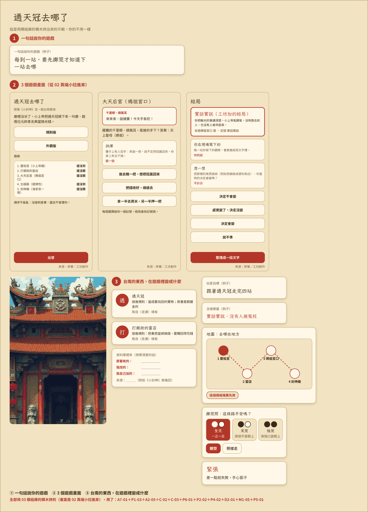
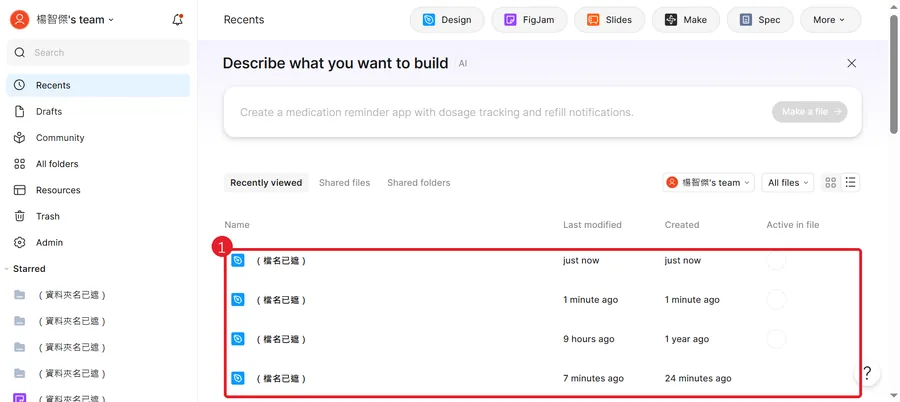

所有週次 · 遊戲設計學 · W11（Figma 單頁企劃）Semua Minggu · Desain Game · W11 (Rencana satu halaman Figma)
把你的走讀遊戲點子，排成一頁單頁企劃Susun ide game tur jelajah kamu menjadi rencana satu halaman
最後更新：2026-11-18 13:23Pembaruan terakhir: 2026-11-18 13:23
這週要做：從 9 個走讀方向挑 1 個（每個方向都有可以直接照著做的步驟），在 Figma 排出一頁單頁企劃，放 3 個遊戲畫面。Tugas minggu ini: Pilih 1 dari 9 arah tur jelajah (setiap arah punya langkah-langkah yang bisa langsung kamu ikuti), lalu susun rencana satu halaman di Figma dengan memasukkan 3 layar game.
怎麼交：今天先做問卷（截圖交 W11-1，11/18 23:30 前）；Figma 單頁企劃連結＋ AI 助教結果卡交 W11-2，12/02（三）19:05 截止，期限一到不能再交。Cara mengumpulkan: Hari ini isi kuesioner terlebih dahulu (ambil tangkapan layar lalu kumpulkan ke W11-1 sebelum 18/11 pukul 23:30); tautan rencana satu halaman Figma + kartu hasil asisten pengajar AI dikumpulkan ke W11-2, batas waktu Rabu 02/12 pukul 19:05, lewat batas waktu tidak bisa mengumpulkan lagi.
3 個畫面＋一句話說你的遊戲＋一個台南的東西，就完成了。盡量在課堂上做完；期限有兩週，回家可以補。3 layar + satu kalimat penjelasan game kamu + satu hal tentang Tainan, selesai! Usahakan selesai di kelas; batas waktu dua minggu, jadi bisa kamu lengkapi di rumah.
做過 W10 的同學：你 W10 在 Figma 做好的那個畫面，可以複製進來當第 1 個畫面；沒做 W10 也沒關係，從下面挑一個方向做。Bagi yang sudah mengerjakan W10: Layar yang sudah kamu buat di Figma pada W10 bisa disalin ke sini sebagai layar ke-1; kalau belum mengerjakan W10 juga tidak apa-apa, silakan pilih salah satu arah di bawah ini.
做完的樣子：別人只看這一頁就看得懂。下一份要做什麼，老師會在課堂上說明。Hasil akhirnya: Orang lain bisa langsung paham hanya dengan melihat satu halaman ini. Untuk tugas berikutnya, dosen akan menjelaskannya di kelas.
做完長這樣（點圖可以放大）Contoh hasil jadi seperti ini (klik gambar untuk memperbesar)

- 一句話說你的遊戲Satu kalimat penjelasan game kamu
- 3 個遊戲畫面3 layar game
- 台南的東西，在遊戲裡變成什麼Hal tentang Tainan, berubah menjadi apa di dalam game
全部用「03 模組庫」的模組拼的，旁邊標了編號，你也可以照著拼。Semuanya disusun menggunakan modul dari 「03 模組庫」(03 Pustaka Modul), nomor kodenya sudah ditandai di samping, kamu juga bisa menyusunnya dengan cara yang sama.
問卷Kuesioner課程自我檢核問卷（約 4 分鐘）Kuesioner evaluasi diri mata kuliah (sekitar 4 menit)
約 4 分鐘，今天填一次就好。Sekitar 4 menit, cukup isi sekali saja hari ini.
填完會出現一張「問卷完成卡」（上面有完成碼）。把它截圖，交到 flipclass 的「W11-1」（成績佔 3%）。Setelah selesai diisi, akan muncul "Kartu Selesai Kuesioner" (ada kode penyelesaian di atasnya). Ambil tangkapan layar (screenshot), lalu kumpulkan ke 「W11-1」(W11-1) di flipclass (berbobot nilai 3%).
六步Enam langkah做完這一份Selesaikan bagian ini
1看 9 個走讀方向，挑 1 個當起點Lihat 9 arah tur jelajah, pilih 1 sebagai titik awal約 20 分鐘Sekitar 20 menit
先按下面的「▶ 試玩走讀樣板」玩一下，再點開下面的方向，挑 1 個。每個方向都附「照著做」：用哪幾塊積木、一句話怎麼寫、3 個畫面放什麼。
完成的樣子：你說得出「我挑這個方向，因為＿＿」。Pertama, klik 「▶ 試玩走讀樣板」(▶ Coba templat tur jelajah) di bawah untuk mencoba memainkannya sebentar, lalu buka arah di bawah dan pilih 1. Setiap arah dilengkapi dengan panduan langkah: blok apa saja yang digunakan, bagaimana menulis satu kalimat penjelas, dan apa yang ditampilkan di 3 layar.
Hasil akhir: Kamu bisa menjelaskan, "Saya memilih arah ini karena ＿＿".
▶ 試玩走讀樣板 🎨 走讀修改樣板（Figma）▶ 試玩走讀樣板 (▶ Coba templat tur jelajah) 🎨 Templat modifikasi tur jelajah (Figma)
方向 1：限時尋寶 在倒數結束前，找到幾個地點，找得越多分數越高。Arah 1: Berburu Harta Terbatas Waktu Sebelum hitung mundur selesai, temukan beberapa lokasi; semakin banyak yang ditemukan, semakin tinggi nilainya.
去哪裡走：廟前、老街轉角、巷口（一般的描述，你可以換成自己的地點）
誰在旁邊：沒有特別的人物，由旁白帶你走
一句話範例：如果倒數計時遇上老街轉角Pergi ke mana: Depan kuil, sudut jalan tua, mulut gang (deskripsi umum, kamu boleh menggantinya dengan lokasimu sendiri)
Siapa yang menemani: Tidak ada karakter khusus, narator yang akan memandu jalanmu
Contoh satu kalimat: Bagaimana jika hitungan mundur bertemu dengan sudut jalan tua
照著做：Ikuti langkah ini:
- 貼積木。到 Figma 的「03 模組庫」，找這幾塊，複製（Ctrl＋C），貼到「01 單頁企劃」（Ctrl＋V）：
台南卡 C-04「媽祖宮口」：熱鬧的地方，有誘惑也有機會
玩法積木 M3-03 倒數計時、M4-02 路線站點、M6-01 兩難選項、M7-02 分數門檻Tempel blok. Buka bagian 「03 模組庫」(Pustaka Modul 03) di Figma, cari beberapa blok ini, salin (Ctrl＋C), lalu tempel ke 「01 單頁企劃」(Rencana satu halaman 01) (Ctrl＋V):
kartu Tainan C-04「媽祖宮口」: Tempat yang ramai, ada godaan dan juga peluang
blok mekanik M3-03 Hitung mundur, M4-02 Titik rute, M6-01 Pilihan dilema, M7-02 Ambang batas skor - 寫一句話。照「如果＿＿遇上＿＿」填空，例如：如果倒數計時遇上老街轉角。Tulis satu kalimat. Isi bagian kosong sesuai pola "Jika ＿＿ bertemu dengan ＿＿", contohnya: Jika hitung mundur bertemu dengan sudut jalan tua.
- 排 3 個畫面。Susun 3 layar.這個方向的 4 種畫面（挑 3 個）：4 jenis layar untuk arah ini (pilih 3):
- 開始：這趟有時間限制Mulai: Perjalanan kali ini ada batas waktu
- 遊玩：倒數中，找眼前這個地點Bermain: Sedang menghitung mundur, cari lokasi yang ada di depan mata
- 事件：時間快用完，冒險還是穩穩走Peristiwa: Waktu hampir habis, mau ambil risiko atau jalan aman saja
- 結果：找到幾個地點、幾分Hasil: Menemukan berapa lokasi, dapat berapa poin
- 現成的畫面。「走讀修改樣板」的「02 遊戲介面」頁，「02-D1 限時尋寶」那一區，已經有這個方向的 4 張畫面，名字是「1 限時尋寶｜開始」「1 限時尋寶｜遊玩」「1 限時尋寶｜事件」「1 限時尋寶｜結果」：複製過來，改字和顏色就是你的版本。Layar yang sudah siap pakai. Di halaman 「02 遊戲介面」(Antarmuka Game 02) pada 「走讀修改樣板」(Templat Modifikasi Tur Jelajah), di area 「02-D1 限時尋寶」(02-D1 Berburu Harta Karun Terbatas Waktu), sudah tersedia 4 layar untuk arah ini, dengan nama 「1 限時尋寶｜開始」(Mulai)、「1 限時尋寶｜遊玩」(Bermain)、「1 限時尋寶｜事件」(Peristiwa)、「1 限時尋寶｜結果」(Hasil): salin ke sini, lalu ubah teks dan warnanya agar menjadi versimu.
- 放一個台南的東西。把「媽祖宮口」當成最後一個地點：熱鬧的地方有誘惑，也有機會，玩家要不要為了它多花一點時間？Masukkan satu unsur Tainan. Jadikan 「媽祖宮口」 sebagai lokasi terakhir: Tempat ramai punya godaan dan juga peluang, apakah pemain mau meluangkan lebih banyak waktu demi tempat ini?
玩起來的感覺：緊張：差一點就失敗，手心冒汗。Sensasi saat bermain: Tegang: Hampir saja gagal, telapak tangan sampai berkeringat.
做完長這樣（點圖可以放大）。Setelah selesai hasilnya seperti ini (klik gambar untuk memperbesar).
方向 2：角色扮演 選一個人當主角，所有任務都用他的眼睛看、用他的口氣說。Arah 2: Bermain peran Pilih satu orang sebagai tokoh utama, semua misi dilihat dari sudut pandangnya dan disampaikan dengan gaya bicaranya.
去哪裡走：一間店、一條街（一般的描述）
誰在旁邊：挑擔的小販、廟裡的幫手、外地的旅人（這三個人是工坊虛構的，不是史料）
一句話範例：如果挑擔小販遇上當店Pergi ke mana: Sebuah toko, satu jalan (deskripsi umum)
Siapa yang ada di samping: Pedagang pikulan, pembantu di kuil, pelancong dari luar kota (ketiga orang ini fiktif dari lokakarya, bukan catatan sejarah)
Contoh satu kalimat: Bagaimana jika pedagang pikulan bertemu rumah gadai
照著做：Ikuti langkah ini:
- 貼積木。到 Figma 的「03 模組庫」，找這幾塊，複製（Ctrl＋C），貼到「01 單頁企劃」（Ctrl＋V）：
台南卡 C-03「打銀街的當店」：把東西當掉換錢，要贖回得花錢
玩法積木 M5-04 選一個身分、M5-02 對話框、M6-01 兩難選項、M7-01 三個結局Tempel blok. Buka 「03 模組庫」(Pustaka Modul 03) di Figma, cari beberapa blok ini, salin (Ctrl＋C), lalu tempel ke 「01 單頁企劃」(Rencana satu halaman 01) (Ctrl＋V):
kartu Tainan C-03 「打銀街的當店」(Rumah Gadai di Jalan Dayin): Menggadaikan barang untuk dapat uang, perlu uang untuk menebusnya kembali
blok mekanik M5-04 Pilih satu identitas, M5-02 Kotak dialog, M6-01 Pilihan dilema, M7-01 Tiga akhir cerita - 寫一句話。照「如果＿＿遇上＿＿」填空，例如：如果挑擔小販遇上當店。Tulis satu kalimat. Isi bagian kosong sesuai pola "Bagaimana jika ＿＿ bertemu ＿＿", misalnya: Bagaimana jika pedagang pikulan bertemu rumah gadai.
- 排 3 個畫面。Susun 3 layar.這個方向的 4 種畫面（挑 3 個）：4 jenis layar untuk arah ini (pilih 3):
- 開始：你今天是誰Mulai: Siapa kamu hari ini
- 遊玩：用角色的口氣說任務Bermain: Ucapkan misi dengan nada bicara karakter
- 事件：角色遇到兩難Peristiwa: Karakter menghadapi dilema
- 結果：用角色的口氣說這一天Hasil: Ceritakan hari ini dengan nada bicara karakter
- 現成的畫面。「走讀修改樣板」的「02 遊戲介面」頁，「02-D2 角色扮演」那一區，已經有這個方向的 4 張畫面，名字是「2 角色扮演｜開始」「2 角色扮演｜遊玩」「2 角色扮演｜事件」「2 角色扮演｜結果」：複製過來，改字和顏色就是你的版本。Layar yang sudah siap pakai. Di halaman 「02 遊戲介面」(Antarmuka Game 02) pada 「走讀修改樣板」(Templat Modifikasi Tur Jelajah), di area 「02-D2 角色扮演」(02-D2 Bermain Peran), sudah tersedia 4 layar untuk arah ini, dengan nama 「2 角色扮演｜開始」(Mulai)、「2 角色扮演｜遊玩」(Bermain)、「2 角色扮演｜事件」(Peristiwa)、「2 角色扮演｜結果」(Hasil): salin ke sini, lalu ubah teks dan warnanya agar menjadi versimu.
- 放一個台南的東西。把東西拿去「打銀街的當店」當掉換錢：同一個當店，小販、幫手、旅人會有不同的決定。Masukkan satu hal tentang Tainan. Bawa barang ke 「打銀街的當店」(Rumah Gadai di Jalan Dayin) untuk digadaikan menjadi uang: Di rumah gadai yang sama, pedagang, pembantu, dan pelancong akan mengambil keputusan yang berbeda.
玩起來的感覺：得意：想截圖給朋友看。Sensasi saat bermain: Bangga: Ingin mengambil tangkapan layar untuk ditunjukkan kepada teman.
做完長這樣（點圖可以放大）。Setelah selesai hasilnya seperti ini (klik gambar untuk memperbesar).
方向 3：收集圖鑑 走到哪裡就多收一頁圖鑑，集滿就有成就。Arah 3: Mengoleksi Ensiklopedia Setiap berjalan ke suatu tempat, kamu mengumpulkan satu halaman ensiklopedia baru; kumpulkan semuanya untuk membuka pencapaian.
去哪裡走：每一站收一頁（一般的描述）
誰在旁邊：沒有特別的人物，圖鑑上寫你自己的一句話
一句話範例：如果圖鑑遇上廟門檻Pergi ke mana: Kumpulkan satu halaman di setiap pemberhentian (deskripsi umum)
Siapa yang ada di samping: Tidak ada tokoh khusus, tuliskan satu kalimat dari dirimu sendiri di ensiklopedia
Contoh satu kalimat: Bagaimana jika ensiklopedia bertemu ambang pintu kuil
照著做：Ikuti langkah ini:
- 貼積木。到 Figma 的「03 模組庫」，找這幾塊，複製（Ctrl＋C），貼到「01 單頁企劃」（Ctrl＋V）：
台南卡 C-05「廟門檻」：進廟腳要抬過去，踩到就出事
玩法積木 M2-04 收集碎片、M4-05 現場熱點、M8-04 圖鑑完成度、M8-02 評價Tempel blok. Buka 「03 模組庫」(03 Pustaka Modul) di Figma, cari blok-blok ini, salin (Ctrl＋C), lalu tempel ke 「01 單頁企劃」(01 rencana satu halaman) (Ctrl＋V):
kartu Tainan C-05 「廟門檻」(Ambang Pintu Kelenteng): saat masuk kelenteng kaki harus melangkah lewat atasnya, kalau terinjak bisa celaka
blok mekanik M2-04 Mengumpulkan kepingan, M4-05 Titik ramai di lokasi, M8-04 Kelengkapan ensiklopedia, M8-02 Penilaian - 寫一句話。照「如果＿＿遇上＿＿」填空，例如：如果圖鑑遇上廟門檻。Tulis satu kalimat. Isi bagian kosong mengikuti pola 「如果＿＿遇上＿＿」(Jika ＿＿ bertemu dengan ＿＿), contohnya: Jika ensiklopedia bertemu dengan ambang pintu kelenteng.
- 排 3 個畫面。Susun 3 layar.這個方向的 4 種畫面（挑 3 個）：4 jenis layar untuk arah ini (pilih 3):
- 開始：這趟要收一本圖鑑Mulai: perjalanan kali ini untuk mengumpulkan satu buku ensiklopedia
- 遊玩：到一個地方，填那一頁Bermain: tiba di suatu tempat, lalu isi halaman tersebut
- 事件：碰到稀有的一頁Peristiwa: bertemu dengan halaman yang langka
- 結果：收了幾頁、有沒有集滿Hasil: berapa halaman yang terkumpul, apakah sudah lengkap semua
- 現成的畫面。「走讀修改樣板」的「02 遊戲介面」頁，「02-D3 收集圖鑑」那一區，已經有這個方向的 4 張畫面，名字是「3 收集圖鑑｜開始」「3 收集圖鑑｜遊玩」「3 收集圖鑑｜事件」「3 收集圖鑑｜結果」：複製過來，改字和顏色就是你的版本。Layar yang sudah siap pakai. Di halaman 「02 遊戲介面」(Antarmuka Game 02) pada 「走讀修改樣板」(Templat Modifikasi Tur Jelajah), di area 「02-D3 收集圖鑑」(02-D3 Mengumpulkan Ensiklopedia), sudah tersedia 4 layar untuk arah ini, dengan nama 「3 收集圖鑑｜開始」(Mulai)、「3 收集圖鑑｜遊玩」(Bermain)、「3 收集圖鑑｜事件」(Peristiwa)、「3 收集圖鑑｜結果」(Hasil): salin ke sini, lalu ubah teks dan warnanya agar menjadi versimu.
- 放一個台南的東西。把「廟門檻」當稀有的一頁：要抬腳跨過去才收得到，踩到就收不到。Masukkan satu hal khas Tainan. Jadikan 「廟門檻」(Ambang Pintu Kelenteng) sebagai halaman langka: kamu harus mengangkat kaki melangkah melewatinya baru bisa mendapatkannya, kalau terinjak kamu tidak akan bisa mendapatkannya.
玩起來的感覺：成就：終於湊出答案的那一刻。Sensasi saat bermain: pencapaian: momen ketika akhirnya berhasil menyusun jawabannya.
做完長這樣（點圖可以放大）。Setelah selesai hasilnya seperti ini (klik gambar untuk memperbesar).
方向 4：謎題鏈 答對一個謎題才解開下一站，答案要到現場找。Arah 4: Rantai Teka-teki Jawab satu teka-teki dengan benar baru bisa membuka perhentian berikutnya, jawabannya harus dicari langsung di lokasi.
去哪裡走：廟前、老街轉角、巷口（一般的描述）
誰在旁邊：一個負責看、一個負責聽的守衛（千里眼、順風耳）
一句話範例：如果守衛遇上謎題Pergi jalan-jalan ke mana: depan kelenteng, sudut jalan tua, mulut gang (deskripsi umum)
Siapa yang ada di samping: satu penjaga yang bertugas melihat dan satu yang bertugas mendengar (Qianliyan dan Shunfeng'er)
Contoh satu kalimat: Jika penjaga bertemu dengan teka-teki
照著做：Ikuti langkah ini:
- 貼積木。到 Figma 的「03 模組庫」，找這幾塊，複製（Ctrl＋C），貼到「01 單頁企劃」（Ctrl＋V）：
台南卡 C-08「千里眼、順風耳」：一個看、一個聽，當成守衛
玩法積木 M8-03 湊出新線索、M6-03 問神，一次一題、M4-04 岔路三條巷、M7-03 到家條件Tempel blok. Buka 「03 模組庫」(03 Pustaka Modul) di Figma, cari blok-blok ini, salin (Ctrl＋C), lalu tempel ke 「01 單頁企劃」(01 rencana satu halaman) (Ctrl＋V):
kartu Tainan C-08 「千里眼、順風耳」(Qianliyan, Shunfeng'er): satu melihat, satu mendengar, jadikan sebagai penjaga
blok mekanik M8-03 Menyusun petunjuk baru, M6-03 Bertanya kepada dewa, satu pertanyaan setiap kali, M4-04 Persimpangan tiga gang, M7-03 Syarat tiba di rumah - 寫一句話。照「如果＿＿遇上＿＿」填空，例如：如果守衛遇上謎題。Tulis satu kalimat. Isi bagian kosong mengikuti pola "Jika ＿＿ bertemu dengan ＿＿", contohnya: Jika penjaga bertemu dengan teka-teki.
- 排 3 個畫面。Susun 3 layar.這個方向的 4 種畫面（挑 3 個）：4 jenis layar untuk arah ini (pilih 3):
- 開始：靠謎題前進Mulai: bergerak maju mengandalkan teka-teki
- 遊玩：在現場找線索Bermain: mencari petunjuk di lokasi
- 事件：答錯卡關，看提示、問人還是換路Peristiwa: salah menjawab lalu terhenti, apakah melihat petunjuk, bertanya ke orang lain, atau ganti jalan
- 結果：鎖打開的順序、用了幾個提示Hasil: urutan terbukanya gembok, berapa banyak petunjuk yang digunakan
- 現成的畫面。「走讀修改樣板」的「02 遊戲介面」頁，「02-D4 謎題鏈」那一區，已經有這個方向的 4 張畫面，名字是「4 謎題鏈｜開始」「4 謎題鏈｜遊玩」「4 謎題鏈｜事件」「4 謎題鏈｜結果」：複製過來，改字和顏色就是你的版本。Layar yang sudah siap pakai. Di halaman 「02 遊戲介面」(Antarmuka Game 02) pada 「走讀修改樣板」(Templat Modifikasi Tur Jelajah), di area 「02-D4 謎題鏈」(02-D4 Rantai Teka-teki), sudah tersedia 4 layar untuk arah ini, dengan nama 「4 謎題鏈｜開始」(Mulai)、「4 謎題鏈｜遊玩」(Bermain)、「4 謎題鏈｜事件」(Peristiwa)、「4 謎題鏈｜結果」(Hasil): salin ke sini, lalu ubah teks dan warnanya agar menjadi versimu.
- 放一個台南的東西。謎題由「一個看、一個聽」的守衛出：看得到的線索和聽得到的線索要湊在一起。Masukkan satu unsur Tainan. Teka-teki diberikan oleh penjaga yang "satu melihat, satu mendengar": petunjuk yang bisa dilihat dan petunjuk yang bisa didengar harus digabungkan.
玩起來的感覺：好奇：想知道轉角後面是什麼。Sensasi saat bermain: rasa ingin tahu: ingin tahu apa yang ada di balik tikungan.
做完長這樣（點圖可以放大）。Setelah selesai hasilnya seperti ini (klik gambar untuk memperbesar).
方向 5：擲筊問路 每到一站先擲筊，筊決定下一站去哪、能不能做某件事。Arah 5: Melempar Bwa Bwei Bertanya Arah Setiap tiba di satu perhentian, lempar bwa bwei terlebih dahulu; hasil lemparan menentukan pergi ke mana selanjutnya atau apakah boleh melakukan hal tertentu.
去哪裡走：廟埕、路口、三條巷（一般的描述）
誰在旁邊：找人收驚的那個人（收驚婆）
一句話範例：如果擲筊遇上收驚Pergi berjalan ke mana: pelataran kuil, persimpangan jalan, tiga gang (deskripsi umum)
Siapa yang ada di samping: orang yang mencari seseorang untuk ritual penenang jiwa (dukun penenang jiwa)
Contoh satu kalimat: Jika melempar bwa bwei bertemu dengan ritual penenang jiwa
照著做：Ikuti langkah ini:
- 貼積木。到 Figma 的「03 模組庫」，找這幾塊，複製（Ctrl＋C），貼到「01 單頁企劃」（Ctrl＋V）：
台南卡 C-01「擲筊」：用來決定走哪條路、能不能做某件事
台南卡 C-12「收驚」：嚇到了要找人收，要花香
玩法積木 M1-05 擲筊問一下、M4-04 岔路三條巷、M6-02 突發事件、M7-01 三個結局Tempel blok. Buka 「03 模組庫」(03 Pustaka Modul) di Figma, cari beberapa blok ini, salin (Ctrl＋C), lalu tempel ke 「01 單頁企劃」(01 Rencana Satu Halaman) (Ctrl＋V):
kartu Tainan C-01「擲筊」(Melempar bwa bwei): digunakan untuk menentukan lewat jalan mana atau apakah boleh melakukan hal tertentu
kartu Tainan C-12「收驚」(Ritual penenang jiwa): kaget dan ketakutan lalu mencari orang untuk menenangkan jiwa, membutuhkan wewangian bunga
blok mekanik M1-05 Melempar bwa bwei bertanya sebentar, M4-04 Tiga gang percabangan jalan, M6-02 Peristiwa tak terduga, M7-01 Tiga akhir cerita - 寫一句話。照「如果＿＿遇上＿＿」填空，例如：如果擲筊遇上收驚。Tulis satu kalimat. Isi bagian kosong mengikuti pola "Jika ＿＿ bertemu dengan ＿＿", contohnya: Jika melempar bwa bwei bertemu dengan ritual penenang jiwa.
- 排 3 個畫面。Susun 3 layar.這個方向的 4 種畫面（挑 3 個）：4 jenis layar untuk arah ini (pilih 3):
- 開始：這條路由筊決定Mulai: Rute ini ditentukan oleh lemparan jiao
- 遊玩：站上擲筊，三種結果走不同的路Bermain: Melempar jiao di setiap perhentian, tiga hasil berbeda akan membawa ke rute yang berbeda
- 事件：陰筊，再問一次還是認了Peristiwa: Yin jiao, apakah mau bertanya sekali lagi atau pasrah menerima
- 結果：這趟走了哪幾站、運氣好不好Hasil: Perhentian mana saja yang dikunjungi dalam perjalanan ini, dan apakah kamu beruntung
- 現成的畫面。「走讀修改樣板」的「02 遊戲介面」頁，「02-D5 擲筊問路」那一區，已經有這個方向的 4 張畫面，名字是「5 擲筊問路｜開始」「5 擲筊問路｜遊玩」「5 擲筊問路｜事件」「5 擲筊問路｜結果」：複製過來，改字和顏色就是你的版本。Layar yang sudah siap pakai. Di halaman 「02 遊戲介面」(Antarmuka Game 02) pada 「走讀修改樣板」(Templat Modifikasi Tur Jelajah), di area 「02-D5 擲筊問路」(02-D5 Lempar Jiaobei Menunjuk Jalan), sudah tersedia 4 layar untuk arah ini, dengan nama 「5 擲筊問路｜開始」(Mulai)、「5 擲筊問路｜遊玩」(Bermain)、「5 擲筊問路｜事件」(Peristiwa)、「5 擲筊問路｜結果」(Hasil): salin ke sini, lalu ubah teks dan warnanya agar menjadi versimu.
- 放一個台南的東西。走到嚇一跳的地方，要找收驚婆，花香才能繼續走。Letakkan satu hal khas Tainan. Jika sampai di tempat yang mengejutkan, kamu harus mencari nenek penjual jasa shoujing; setelah mencium aroma dupa/bunga, barulah kamu bisa lanjut berjalan.
玩起來的感覺：驚喜：沒想到還有這一招。Sensasi bermain: Kaget dan kagum: Tidak menyangka ternyata ada cara seperti ini.
做完長這樣（點圖可以放大）。Setelah selesai hasilnya seperti ini (klik gambar untuk memperbesar).
方向 6：收碎片出牌 每一站收一片碎片，碎片變成牌，最後用牌湊出一句話。Arah 6: Kumpulkan kepingan lalu mainkan kartu Kumpulkan satu kepingan di setiap perhentian, kepingan akan menjadi kartu, dan terakhir gunakan kartu-kartu itu untuk membentuk satu kalimat utuh.
去哪裡走：小上帝廟、打銀街的當店、媽祖宮口（走讀樣板的幾站）
誰在旁邊：小上帝、康元帥、趙元帥（《小封神》的人物）
一句話範例：如果碎片遇上當店Pergi ke mana: Kuil Shangdi Kecil, Pegadaian di Jalan Dayin, Pintu Gerbang Kuil Mazu (beberapa perhentian dari templat tur jelajah)
Siapa yang ada di samping: Shangdi Kecil, Panglima Kang, Panglima Zhao (tokoh dari 《Xiao Fengshen》)
Contoh satu kalimat: Jika kepingan bertemu dengan pegadaian
照著做：Ikuti langkah ini:
- 貼積木。到 Figma 的「03 模組庫」，找這幾塊，複製（Ctrl＋C），貼到「01 單頁企劃」（Ctrl＋V）：
台南卡 C-02「通天冠」：當成要找回的寶物；原書是銅鍍金的
台南卡 C-03「打銀街的當店」：把東西當掉換錢，要贖回得花錢
玩法積木 M2-04 收集碎片、M1-01 出牌、M8-03 湊出新線索、M7-02 分數門檻Tempelkan blok mekanik. Buka 「03 模組庫」(03 Pustaka Modul) di Figma, cari bagian-bagian ini, salin (Ctrl＋C), lalu tempel ke 「01 單頁企劃」(01 Rencana satu halaman) (Ctrl＋V):
Kartu Tainan C-02「通天冠」(Mahkota Tongtian): Dijadikan sebagai harta pusaka yang harus ditemukan kembali; aslinya terbuat dari tembaga berlapis emas
Kartu Tainan C-03「打銀街的當店」(Pegadaian di Jalan Dayin): Menggadaikan barang untuk mendapatkan uang, butuh uang untuk menebusnya kembali
Blok mekanik M2-04 Mengumpulkan kepingan, M1-01 Mengeluarkan kartu, M8-03 Menyusun petunjuk baru, M7-02 Ambang batas skor - 寫一句話。照「如果＿＿遇上＿＿」填空，例如：如果碎片遇上當店。Tulis satu kalimat. Isi bagian yang kosong mengikuti pola "Jika ＿＿ bertemu dengan ＿＿", contohnya: Jika kepingan bertemu dengan pegadaian.
- 排 3 個畫面。Susun 3 layar.這個方向的 4 種畫面（挑 3 個）：4 jenis layar untuk arah ini (pilih 3):
- 開始：這趟要收碎片Mulai: Perjalanan kali ini untuk mengumpulkan kepingan
- 遊玩：站上收一片，變成一張牌Bermain: Ambil satu kepingan di perhentian, lalu ubah menjadi satu lembar kartu
- 事件：兩片可以合成新牌Peristiwa: Dua kartu bisa digabung jadi kartu baru
- 結果：手上的牌和湊出的那句話Hasil: Kartu di tangan dan kalimat yang berhasil disusun
- 現成的畫面。「走讀修改樣板」的「02 遊戲介面」頁，「02-D6 收碎片出牌」那一區，已經有這個方向的 4 張畫面，名字是「6 收碎片出牌｜開始」「6 收碎片出牌｜遊玩」「6 收碎片出牌｜事件」「6 收碎片出牌｜結果」：複製過來，改字和顏色就是你的版本。Layar yang sudah siap pakai. Di halaman 「02 遊戲介面」(Antarmuka Game 02) pada 「走讀修改樣板」(Templat Modifikasi Tur Jelajah), di area 「02-D6 收碎片出牌」(02-D6 Kumpulkan Pecahan Mainkan Kartu), sudah tersedia 4 layar untuk arah ini, dengan nama 「6 收碎片出牌｜開始」(Mulai)、「6 收碎片出牌｜遊玩」(Bermain)、「6 收碎片出牌｜事件」(Peristiwa)、「6 收碎片出牌｜結果」(Hasil): salin ke sini, lalu ubah teks dan warnanya agar menjadi versimu.
- 放一個台南的東西。「通天冠」是要找回的寶物：拿去當店換錢，牌就少一張，要不要贖回來？Masukkan satu hal tentang Tainan. Mahkota Tongtian adalah pusaka yang harus dicari: kalau digadaikan di rumah gadai untuk dapat uang, kartu kamu berkurang satu. Mau ditebus kembali atau tidak?
玩起來的感覺：捨不得：要放掉一樣好東西。Sensasi bermain: Berat hati: harus merelakan satu barang bagus.
做完長這樣（點圖可以放大）。Setelah selesai hasilnya seperti ini (klik gambar untuk memperbesar).
方向 7：實話或謊話 路上發生事情，回去要交代：說實話或編一個故事，結局不一樣。Arah 7: Jujur atau bohong Ada kejadian di jalan, dan kamu harus melapor setelah pulang: bicara jujur atau mengarang cerita, akhirnya akan berbeda.
去哪裡走：打銀街的當店、媽祖宮口（走讀樣板的幾站）
誰在旁邊：小上帝、康元帥、趙元帥（《小封神》的人物）
一句話範例：如果一句謊話遇上當店Jalan-jalan ke mana: Rumah gadai di Jalan Dayin, gerbang Kuil Mazu (beberapa titik di templat tur jelajah)
Siapa yang menemani: Shangdi Kecil, Marsekal Kang, Marsekal Zhao (tokoh dalam Xiao Fengshen)
Contoh satu kalimat: Bagaimana jika sebuah kebohongan bertemu dengan rumah gadai
照著做：Ikuti langkah ini:
- 貼積木。到 Figma 的「03 模組庫」，找這幾塊，複製（Ctrl＋C），貼到「01 單頁企劃」（Ctrl＋V）：
台南卡 C-03「打銀街的當店」：把東西當掉換錢，要贖回得花錢
台南卡 C-04「媽祖宮口」：熱鬧的地方，有誘惑也有機會
玩法積木 M6-01 兩難選項、M2-02 人情簿、M5-02 對話框、M7-01 三個結局Tempel blok. Buka 「03 模組庫」(Pustaka Modul 03) di Figma, cari blok-blok ini, salin (Ctrl＋C), lalu tempel ke 「01 單頁企劃」(Rencana satu halaman 01) (Ctrl＋V):
Kartu Tainan C-03 「打銀街的當店」(Rumah gadai di Jalan Dayin): Menggadaikan barang demi uang, harus bayar kalau mau menebusnya
Kartu Tainan C-04 「媽祖宮口」(Gerbang Kuil Mazu): Tempat yang ramai, ada godaan dan juga ada peluang
Blok mekanik M6-01 Pilihan dilema, M2-02 Buku budi baik, M5-02 Kotak dialog, M7-01 Tiga akhir cerita - 寫一句話。照「如果＿＿遇上＿＿」填空，例如：如果一句謊話遇上當店。Tulis satu kalimat. Isi bagian kosong sesuai pola 「如果＿＿遇上＿＿」(Bagaimana jika ＿＿ bertemu dengan ＿＿), contohnya: Bagaimana jika sebuah kebohongan bertemu dengan rumah gadai.
- 排 3 個畫面。Susun 3 layar.這個方向的 4 種畫面（挑 3 個）：4 jenis layar untuk arah ini (pilih 3):
- 開始：任務和這趟的錢Mulai: Tugas dan uang untuk perjalanan ini
- 遊玩：在當店、媽祖宮口做決定Bermain: Mengambil keputusan di rumah gadai dan gerbang Kuil Mazu
- 事件：回去要交代，說實話或說謊Peristiwa: Pulang dan harus memberi penjelasan, bicara jujur atau berbohong
- 結果：依你說的話走向不同結局Hasil: Menuju akhir cerita yang berbeda tergantung apa yang kamu katakan
- 現成的畫面。「走讀修改樣板」的「02 遊戲介面」頁，「02-D7 實話或謊話」那一區，已經有這個方向的 4 張畫面，名字是「7 實話或謊話｜開始」「7 實話或謊話｜遊玩」「7 實話或謊話｜事件」「7 實話或謊話｜結果」：複製過來，改字和顏色就是你的版本。Layar yang sudah siap pakai. Di halaman 「02 遊戲介面」(Antarmuka Game 02) pada 「走讀修改樣板」(Templat Modifikasi Tur Jelajah), di area 「02-D7 實話或謊話」(02-D7 Kebenaran atau Kebohongan), sudah tersedia 4 layar untuk arah ini, dengan nama 「7 實話或謊話｜開始」(Mulai)、「7 實話或謊話｜遊玩」(Bermain)、「7 實話或謊話｜事件」(Peristiwa)、「7 實話或謊話｜結果」(Hasil): salin ke sini, lalu ubah teks dan warnanya agar menjadi versimu.
- 放一個台南的東西。走讀樣板有一個結局是「照原書走：一句謊話」，另有工坊加的「實話實說」結局；你可以加第三個。Masukkan satu unsur khas Tainan. Templat tur jelajah punya satu akhir cerita yaitu "照原書走：一句謊話" (Ikuti buku aslinya: sebuah kebohongan), dan ada juga akhir cerita tambahan dari lokakarya yaitu "實話實說" (Katakan yang sebenarnya); kamu bisa menambahkan akhir cerita yang ketiga.
玩起來的感覺：緊張：差一點就失敗，手心冒汗。Sensasi saat bermain: Tegang: Hampir saja gagal, telapak tangan sampai berkeringat.
做完長這樣（點圖可以放大）。Setelah selesai hasilnya seperti ini (klik gambar untuk memperbesar).
方向 8：遶境不能停 跟著神轎沿路走，停下來就要退回重來，要顧體力和順序。Arah 8: Pawai Keliling Tidak Boleh Berhenti Ikuti tandu dewa berjalan di sepanjang jalan, kalau berhenti harus kembali dan mulai dari awal, perhatikan stamina dan urutannya.
去哪裡走：小上帝廟、打銀街、媽祖宮口、安海街，再回小上帝廟（遶境樣板的路線）
誰在旁邊：抬轎的隊伍
一句話範例：如果遶境遇上停下來Jalan-jalan ke mana: Kuil Xiaoshangdi, Jalan Dayin, Pintu Masuk Kuil Mazu, Jalan Anhai, lalu kembali ke Kuil Xiaoshangdi (rute templat pawai keliling)
Siapa yang ada di samping: Rombongan pengangkat tandu dewa
Contoh satu kalimat: Kalau pawai keliling bertemu dengan situasi harus berhenti
照著做：Ikuti langkah ini:
- 貼積木。到 Figma 的「03 模組庫」，找這幾塊，複製（Ctrl＋C），貼到「01 單頁企劃」（Ctrl＋V）：
台南卡 C-11「遶境」：神轎沿路走，停下來就要重來
玩法積木 M1-02 走一格、M2-03 體力條、M4-02 路線站點、M7-04 停下就退回Tempel blok. Buka bagian 「03 模組庫」(03 Pustaka Modul) di Figma, cari beberapa blok ini, salin (Ctrl＋C), lalu tempel ke 「01 單頁企劃」(01 Rencana Satu Halaman) (Ctrl＋V):
Kartu Tainan C-11 "遶境" (Pawai keliling): Tandu dewa berjalan di sepanjang jalan, kalau berhenti harus mulai dari awal
Blok mekanik M1-02 Maju satu kotak, M2-03 Bar stamina, M4-02 Pos perhentian rute, M7-04 Berhenti langsung mundur - 寫一句話。照「如果＿＿遇上＿＿」填空，例如：如果遶境遇上停下來。Tulis satu kalimat. Isi bagian yang kosong mengikuti pola "Kalau ＿＿ bertemu dengan ＿＿", contohnya: Kalau pawai keliling bertemu dengan situasi harus berhenti.
- 排 3 個畫面。Susun 3 layar.這個方向的 4 種畫面（挑 3 個）：4 jenis layar untuk arah ini (pilih 3):
- 開始：起駕，一路不能停Mulai: Keberangkatan tandu dewa, tidak boleh berhenti sepanjang jalan
- 遊玩：一格一格走，體力會掉Bermain: Berjalan kotak demi kotak, stamina akan berkurang
- 事件：路障，繞還是衝Peristiwa: Halangan di jalan, memutar atau menerobos
- 結果：圓滿回宮，還是退回重來Hasil: Sukses kembali ke kuil, atau mundur dan mulai dari awal
- 現成的畫面。「走讀修改樣板」的「02 遊戲介面」頁，「02-D8 遶境不能停」那一區，已經有這個方向的 4 張畫面，名字是「8 遶境不能停｜開始」「8 遶境不能停｜遊玩」「8 遶境不能停｜事件」「8 遶境不能停｜結果」：複製過來，改字和顏色就是你的版本。Layar yang sudah siap pakai. Di halaman 「02 遊戲介面」(Antarmuka Game 02) pada 「走讀修改樣板」(Templat Modifikasi Tur Jelajah), di area 「02-D8 遶境不能停」(02-D8 Pawai Tak Boleh Berhenti), sudah tersedia 4 layar untuk arah ini, dengan nama 「8 遶境不能停｜開始」(Mulai)、「8 遶境不能停｜遊玩」(Bermain)、「8 遶境不能停｜事件」(Peristiwa)、「8 遶境不能停｜結果」(Hasil): salin ke sini, lalu ubah teks dan warnanya agar menjadi versimu.
- 放一個台南的東西。「遶境」的規則就是神轎沿路走，停下來就要重來。Masukkan satu unsur khas Tainan. Aturan dari "遶境" (Pawai keliling) adalah tandu dewa berjalan di sepanjang jalan, kalau berhenti harus mulai dari awal.
玩起來的感覺：緊張：差一點就失敗，手心冒汗。Sensasi saat bermain: Tegang: Hampir saja gagal, telapak tangan sampai berkeringat.
做完長這樣（點圖可以放大）。Setelah selesai hasilnya seperti ini (klik gambar untuk memperbesar).
方向 9：普渡七夜 每一夜在街上招待客人，招待漏掉的人，會在街角等你。Arah 9: Tujuh Malam Upacara Pudu Menjamu tamu di jalanan setiap malam, orang-orang yang terlewat untuk dijamu akan menunggumu di sudut jalan.
去哪裡走：街口、街中、街角（普渡的街）
誰在旁邊：好兄弟（普渡要招待的對象）、你的幫手
一句話範例：如果普渡遇上街角Jalan-jalan ke mana: Ujung jalan, tengah jalan, sudut jalan (jalanan tempat upacara Pudu)
Siapa yang ada di samping: Saudara baik/Hao Xiong Di (para arwah yang dijamu saat upacara Pudu), penolongmu
Contoh satu kalimat: Kalau upacara Pudu bertemu dengan sudut jalan
照著做：Ikuti langkah ini:
- 貼積木。到 Figma 的「03 模組庫」，找這幾塊，複製（Ctrl＋C），貼到「01 單頁企劃」（Ctrl＋V）：
台南卡 C-09「普渡」：每一夜要招待好兄弟，漏了會在街角等
玩法積木 M3-02 一夜一波、M2-01 四種資源、M6-04 夜裡的聲音、M7-02 分數門檻Tempel blok. Buka bagian 「03 模組庫」(Pustaka Modul) di Figma, cari beberapa blok ini, salin (Ctrl＋C), lalu tempel ke 「01 單頁企劃」(rencana satu halaman) (Ctrl＋V):
kartu Tainan C-09 「普渡」(Pudu / Festival Hantu Kelaparan): Setiap malam harus menjamu roh baik (Hao Xiong Di), yang terlewat akan menunggu di sudut jalan
blok mekanik M3-02 Satu malam satu gelombang, M2-01 Empat jenis sumber daya, M6-04 Suara di malam hari, M7-02 Ambang batas skor - 寫一句話。照「如果＿＿遇上＿＿」填空，例如：如果普渡遇上街角。Tulis satu kalimat. Isi titik-titik sesuai pola "Kalau ＿＿ bertemu ＿＿", contohnya: Kalau Pudu bertemu sudut jalan.
- 排 3 個畫面。Susun 3 layar.這個方向的 4 種畫面（挑 3 個）：4 jenis layar untuk arah ini (pilih 3):
- 開始：這是第幾夜Mulai: Ini malam ke berapa
- 遊玩：一站一站招待Bermain: Menjamu dari pos ke pos
- 事件：夜裡有聲音，過去看還是不理Peristiwa: Ada suara di malam hari, mau pergi melihat atau abaikan saja
- 結果：這一夜招待了幾位、漏了幾位Hasil: Malam ini berhasil menjamu berapa, terlewat berapa
- 現成的畫面。「走讀修改樣板」的「02 遊戲介面」頁，「02-D9 普渡七夜」那一區，已經有這個方向的 4 張畫面，名字是「9 普渡七夜｜開始」「9 普渡七夜｜遊玩」「9 普渡七夜｜事件」「9 普渡七夜｜結果」：複製過來，改字和顏色就是你的版本。Layar yang sudah siap pakai. Di halaman 「02 遊戲介面」(Antarmuka Game 02) pada 「走讀修改樣板」(Templat Modifikasi Tur Jelajah), di area 「02-D9 普渡七夜」(02-D9 Tujuh Malam Pudu), sudah tersedia 4 layar untuk arah ini, dengan nama 「9 普渡七夜｜開始」(Mulai)、「9 普渡七夜｜遊玩」(Bermain)、「9 普渡七夜｜事件」(Peristiwa)、「9 普渡七夜｜結果」(Hasil): salin ke sini, lalu ubah teks dan warnanya agar menjadi versimu.
- 放一個台南的東西。「普渡」的規則是每一夜要招待好兄弟，漏了的會在街角等。Masukkan satu unsur Tainan. Aturan 「普渡」(Pudu) adalah setiap malam harus menjamu roh baik, yang terlewat akan menunggu di sudut jalan.
玩起來的感覺：好奇：想知道轉角後面是什麼。Sensasi saat bermain: rasa ingin tahu: ingin tahu apa yang ada di balik tikungan.
做完長這樣（點圖可以放大）。Setelah selesai hasilnya seperti ini (klik gambar untuk memperbesar).
2把走讀修改樣板複製到自己的 Figma 草稿Salin templat revisi tur jelajah ke draf Figma milikmu sendiri約 10 分鐘Sekitar 10 menit
按步驟 1 的「🎨 走讀修改樣板（Figma）」（老師做好的範本，9 個方向都用這一個檔，可以複製成自己的），用學校信箱登入 Figma，按檔名旁的 ▾ →「Duplicate to your drafts」（複製到我的草稿）。
完成的樣子：檔名改成你的編號。Klik 「🎨 走讀修改樣板（Figma）」(Templat revisi tur jelajah Figma) di langkah 1 (templat yang sudah disiapkan dosen, ke-9 arah memakai file yang sama ini, bisa kamu salin menjadi milikmu sendiri), masuk ke Figma dengan email kampus, klik tanda ▾ di samping nama file → Duplicate to your drafts.
Hasil yang sudah selesai: Nama file sudah diubah menjadi nomor kamu.
操作圖解：登入與複製Panduan gambar: Cara masuk dan menyalin




不小心點到「Move to trash」（移到垃圾桶）：到 Figma 首頁左邊的「Trash」（垃圾桶）還原。Kalau tidak sengaja mengeklik «Move to trash» (Pindahkan ke tempat sampah): buka «Trash» (Tempat sampah) di sebelah kiri halaman utama Figma untuk memulihkannya.
3從「03 模組庫」挑 2–3 塊，做出 3 個畫面Pilih 2–3 blok dari «03 模組庫» (03 Pustaka Modul), lalu buat 3 layar約 30 分鐘Sekitar 30 menit
到「03 模組庫」（Figma 檔裡放現成模組的那一頁）挑 2–3 個模組（每個有編號，例如 M6-02，跟 AI 助教說話時可以用編號），複製（Ctrl＋C），貼到「02 遊戲介面」（Ctrl＋V），做出 3 個畫面。貼上之後，拖到你要的位置；拖角落可以縮小。只用模組庫的模組組合也可以。
完成的樣子：3 個畫面都有東西，看得出在玩什麼。Buka «03 模組庫» (03 Pustaka Modul, yaitu halaman di berkas Figma yang berisi modul siap pakai), pilih 2–3 modul (setiap modul memiliki nomor kode, misalnya M6-02, kamu bisa menggunakan nomor ini saat berbicara dengan asisten pengajar AI), salin (Ctrl＋C), lalu tempel ke «02 遊戲介面» (02 Antarmuka game) dengan (Ctrl＋V) untuk membuat 3 layar. Setelah ditempel, geser ke posisi yang kamu inginkan; tarik bagian sudutnya untuk memperkecil. Kamu juga boleh menyusunnya hanya menggunakan modul dari Pustaka Modul.
Hasil yang diharapkan: Ketiga layar terisi konten dan terlihat jelas cara memainkannya.
看 29 秒示範：貼積木Tonton video contoh 29 detik: menempel blok
看 29 秒示範：改字與顏色Tonton video contoh 29 detik: mengubah teks dan warna
操作圖解：怎麼拼、Figma 操作Panduan bergambar: cara menyusun dan menggunakan Figma
不知道從哪裡開始：挑一張 P1「一句話」、兩張 C 台南卡、一個 M 玩法，改幾個字就是你的點子。改文字：對文字連點兩下，出現閃爍的游標就能打字，Ctrl＋A 全選，輸入新字，Esc 離開；改錯按 Ctrl＋Z。改顏色：點方框，點右邊的填色色塊，挑一個新的顏色。Kalau bingung harus mulai dari mana: pilih satu kartu P1 «一句話» (Satu kalimat), dua kartu C kartu Tainan, dan satu M cara bermain, lalu ubah beberapa kata untuk menjadikannya ide kamu sendiri. Mengubah teks: Klik dua kali pada teks sampai kursor berkedip muncul untuk mulai mengetik, tekan Ctrl＋A untuk memilih semua, ketik teks baru, lalu tekan Esc untuk keluar; jika salah, tekan Ctrl＋Z untuk membatalkan. Mengubah warna: Klik kotak yang ingin diubah, klik kotak warna Fill di sebelah kanan, lalu pilih warna baru.


進階操作（選看）：貼上後連動、複製一份Operasi lanjutan (opsional): Keterkaitan setelah menempelkan (paste), menduplikasi satu salinan
這段影片用教育版畫面錄；標「需要教育版」的功能免費帳號沒有，其他功能兩邊一樣。Video ini direkam menggunakan layar versi pendidikan; fitur bertanda "memerlukan versi pendidikan" tidak tersedia di akun gratis, fitur lainnya sama di kedua versi.
貼上後的連動與斷開（免費版可用（教育版畫面驗證，免費版若看到不一樣請問老師））
同一個檔裡複製再貼上的，會跟原件連動：原件改，它也跟著改。想大改其中一個，選到它按 Ctrl＋Alt＋B 斷開連動。從別的檔貼進來的本來就是獨立的，不用斷開。Keterkaitan dan pemutusan setelah menempelkan (paste) (Dapat digunakan di versi gratis (Diverifikasi dengan layar versi pendidikan, jika versi gratis terlihat berbeda, silakan tanyakan kepada guru))
Objek yang disalin dan ditempelkan di dalam file yang sama akan terhubung dengan aslinya: jika yang asli diubah, salinannya juga ikut berubah. Jika ingin mengubah salah satunya secara drastis, pilih objek tersebut lalu tekan Ctrl＋Alt＋B untuk memutuskan keterkaitannya. Objek yang ditempelkan dari file lain pada dasarnya sudah berdiri sendiri, jadi tidak perlu diputuskan.
看 37 秒示範：貼上後的連動與斷開Tonton demonstrasi 37 detik: Keterkaitan dan pemutusan setelah menempelkan (paste)
複製一份：Ctrl＋D、Alt 拖曳（免費版可用（教育版畫面驗證，免費版若看到不一樣請問老師））
同一種積木要放好幾個：選到按 Ctrl＋D，會疊在原位，拖一下才看得到；或按住 Alt 不放直接拖，拖到哪複製就落在哪（先按住 Alt、再拖，放開滑鼠後才放開 Alt）。Menduplikasi satu salinan: Ctrl＋D, seret dengan Alt (Dapat digunakan di versi gratis (Diverifikasi dengan layar versi pendidikan, jika versi gratis terlihat berbeda, silakan tanyakan kepada guru))
Jika ingin menaruh beberapa blok mekanik yang sama: pilih blok lalu tekan Ctrl＋D, hasilnya akan bertumpuk di posisi semula, seret sedikit baru terlihat; atau tahan tombol Alt lalu langsung seret, duplikasi akan berada di tempat kamu melepasnya (tekan dan tahan Alt terlebih dahulu, lalu seret, lepaskan mouse sebelum melepaskan Alt).
看 15 秒示範：複製一份：Ctrl＋D、Alt 拖曳Tonton demonstrasi 15 detik: Menduplikasi satu salinan: Ctrl＋D, seret dengan Alt
4排成「01 單頁企劃」Menata menjadi 「01 單頁企劃」(01 rencana satu halaman)約 20 分鐘Sekitar 20 menit
到「01 單頁企劃」，把 3 個畫面和幾張卡排成一頁，版面自由。貼上之後，拖到你要的位置；拖角落可以縮小。
完成的樣子：別人只看這一頁、不聽你講，看得懂。Buka 「01 單頁企劃」(01 rencana satu halaman), tata 3 layar dan beberapa kartu menjadi satu halaman, tata letaknya bebas. Setelah ditempelkan, seret ke posisi yang kamu inginkan; seret sudutnya untuk memperkecil.
Bentuk yang sudah selesai: Orang lain dapat memahaminya hanya dengan melihat halaman ini saja, tanpa perlu mendengarkan penjelasan kamu.
看 50 秒示範：排成一頁Tonton demonstrasi 50 detik: Menata menjadi satu halaman
操作圖解：好的單頁企劃Ilustrasi langkah kerja: Rencana satu halaman yang baik
- 一頁看得完。Dapat dibaca dan dipahami semuanya dalam satu halaman.
- 最好玩的那個畫面放最大。Buat layar yang paling seru menjadi paling besar.
- 用圖說話，少用字。Bicaralah lewat gambar, kurangi penggunaan kata-kata.
參考：Stone Librande（遊戲設計師）把整款遊戲畫在一張紙上的做法。Referensi: cara Stone Librande (perancang game) menggambar seluruh game dalam satu lembar kertas.
進階操作（選看）：排整齊、縮放、鎖定Operasi tingkat lanjut (opsional): merapikan, mengubah ukuran, dan mengunci
這段影片用教育版畫面錄；標「需要教育版」的功能免費帳號沒有，其他功能兩邊一樣。Video ini direkam menggunakan layar versi pendidikan; fitur bertanda "memerlukan versi pendidikan" tidak tersedia di akun gratis, fitur lainnya sama di kedua versi.
自動排版：Shift＋A（免費版可用（教育版畫面驗證，免費版若看到不一樣請問老師））
選 2–3 個積木，按 Shift＋A，它們會被包進一個自動排好的框。預設會沿用原本的空隙（可能很大），到右邊把「間距」改成 24。Tata letak otomatis: Shift＋A (Bisa digunakan di versi gratis (tampilan diverifikasi di edisi edukasi, jika melihat hal berbeda di versi gratis silakan tanyakan kepada guru))
Pilih 2–3 blok, tekan Shift＋A, dan semuanya akan dimasukkan ke dalam bingkai yang tertata otomatis. Nilai default akan mengikuti jarak jeda sebelumnya (bisa jadi sangat besar), jadi pergilah ke sisi kanan dan ubah 「間距」(Jarak) menjadi 24.
看 17 秒示範：自動排版：Shift＋ATonton demo 17 detik: Tata letak otomatis: Shift＋A
整理排列：Tidy up（免費版可用（教育版畫面驗證，免費版若看到不一樣請問老師））
貼了好幾個、歪歪斜斜：全選後按 Ctrl＋Alt＋Shift＋T，一次排整齊；不滿意按 Ctrl＋Z。不要按成 Ctrl＋Alt＋K（會把東西變成元件）。Merapikan susunan: Tidy up (Bisa digunakan di versi gratis (tampilan diverifikasi di edisi edukasi, jika melihat hal berbeda di versi gratis silakan tanyakan kepada guru))
Jika sudah menempel beberapa objek dan posisinya miring: pilih semua lalu tekan Ctrl＋Alt＋Shift＋T untuk merapikannya sekaligus; jika kurang puas, tekan Ctrl＋Z. Jangan sampai salah menekan Ctrl＋Alt＋K (ini akan mengubah objek menjadi komponen).
看 16 秒示範：整理排列：Tidy upTonton demo 16 detik: Merapikan susunan: Tidy up
縮放：拖角落、K 比例縮放（免費版可用（教育版畫面驗證，免費版若看到不一樣請問老師））
拖四個角之一，按住 Shift 保持比例；連裡面的字和間距一起等比縮，選好之後按 K 再拖角落，用完按 V 回到移動工具。Mengubah ukuran: Tarik sudut, K untuk skala proporsional (Bisa digunakan di versi gratis (tampilan diverifikasi di edisi edukasi, jika melihat hal berbeda di versi gratis silakan tanyakan kepada guru))
Tarik salah satu dari empat sudut sambil menahan Shift untuk menjaga proporsi; jika ingin teks dan jarak di dalamnya ikut membesar atau mengecil secara proporsional, tekan K setelah memilih objek, lalu tarik sudutnya. Setelah selesai, tekan V untuk kembali ke alat pemindah.
看 19 秒示範：縮放：拖角落、K 比例縮放Tonton demo 19 detik: Mengubah ukuran: Tarik sudut, K untuk skala proporsional
鎖定與隱藏（免費版可用（教育版畫面驗證，免費版若看到不一樣請問老師））
背景不想拖到：Ctrl＋Shift＋L 鎖定、Ctrl＋Shift＋H 隱藏，再按一次還原。鎖定後點不到，要從左邊圖層清單點它。Mengunci dan menyembunyikan (Bisa digunakan di versi gratis (tampilan diverifikasi di edisi edukasi, jika melihat hal berbeda di versi gratis silakan tanyakan kepada guru))
Jika latar belakang tidak ingin sengaja tertarik: tekan Ctrl＋Shift＋L untuk mengunci, Ctrl＋Shift＋H untuk menyembunyikan, dan tekan sekali lagi untuk membatalkannya. Setelah dikunci, objek tidak bisa diklik di layar, kamu harus memilihnya dari daftar layer di sisi kiri.
看 19 秒示範：鎖定與隱藏Tonton demo 19 detik: Mengunci dan menyembunyikan
5找右下角的 AI 助教聊你的點子Ajak ngobrol asisten pengajar AI di pojok kanan bawah tentang idemu約 15 分鐘Sekitar 15 menit
① 點右下角的「問AI助教」。② 從「你挑了哪一個走讀方向？你的遊戲裡最好玩的那一刻是什麼？」聊起，至少聊 3 輪（你說一次、AI 助教回一次＝1 輪）。③ 聊夠了，AI 助教會把你的話整理成一句，按「對，就這樣」。④ 畫面出現「助教結果卡」，截圖留著，交到 flipclass 的 W11-2。AI 助教不打分數，但討論會被評分（佔 W11-2 這份作業的 50%），老師會讀。
完成的樣子：畫面出現「助教結果卡」。① Klik 「問AI助教」(Tanya asisten pengajar AI) di pojok kanan bawah. ② Mulailah mengobrol dari pertanyaan: "Arah tur jelajah mana yang kamu pilih? Momen paling seru apa yang ada di dalam gamemu?", mengobrollah minimal 3 putaran (kamu bicara sekali, asisten pengajar AI membalas sekali = 1 putaran). ③ Setelah mengobrol cukup banyak, asisten pengajar AI akan merangkum perkataanmu menjadi satu kalimat, lalu klik 「對，就這樣」(Ya, begitu saja). ④ Di layar akan muncul 「助教結果卡」(kartu hasil asisten pengajar), ambil tangkapan layar (screenshot) dan simpan, lalu kumpulkan ke W11-2 di flipclass. Asisten pengajar AI tidak memberi nilai, tetapi diskusi ini akan dinilai (berbobot 50% dari tugas W11-2 ini) dan guru akan membacanya.
Hasil yang diharapkan: Layar menampilkan 「助教結果卡」(kartu hasil asisten pengajar).
6分享連結、交件Bagikan tautan dan kumpulkan tugas約 5 分鐘Sekitar 5 menit
在 Figma 按右上角的「Share」（分享），把存取設成「Anyone」（任何人）、「can view」（可檢視），再按「Copy link」（複製連結），用無痕視窗貼上試一次。到 flipclass 的 W11-2 貼上連結，再附助教結果卡截圖。
完成的樣子：連結打得開，兩樣都交了；打不開視同未繳交。Di Figma, klik tombol Share di pojok kanan atas, atur akses menjadi Anyone dan can view, lalu klik Copy link. Coba buka dan tempel tautan tersebut di jendela penyamaran (incognito). Buka W11-2 di flipclass, tempel tautannya, dan lampirkan tangkapan layar kartu hasil asisten pengajar.
Hasil yang diharapkan: Tautan bisa dibuka dan kedua hal tersebut sudah dikumpulkan; jika tautan tidak bisa dibuka, tugas dianggap belum dikumpulkan.
操作圖解：分享Panduan bergambar: Membagikan tautan

卡住了：常見的卡住與解法Mengalami kendala: Masalah umum dan solusinya
- 找不到複製的選項Tidak menemukan pilihan untuk menyalin
- 先登入 Figma（沒登入只能看）。點檔名旁的 ▾，選「Duplicate to your drafts」（複製到我的草稿）；看不到這一項，就舉手問老師。Masuk (login) ke Figma terlebih dahulu (jika belum masuk, kamu hanya bisa melihat). Klik tanda ▾ di samping nama file, lalu pilih Duplicate to your drafts; jika pilihan ini tidak terlihat, silakan angkat tangan dan tanyakan kepada guru.
- 文字改不了Teks tidak bisa diubah
- 對文字連點兩下，出現閃爍的游標就能打字。Klik dua kali pada teks. Setelah kursor yang berkedip muncul, kamu bisa mulai mengetik.
- Share 裡看不到 AnyoneTidak melihat Anyone di dalam Share
- 在 Share 視窗找存取設定（預設只有你自己），點開改成「Anyone」（任何人），右邊選「can view」（可檢視）。Cari pengaturan akses di jendela Share (default-nya hanya kamu sendiri), klik untuk mengubahnya menjadi "Anyone" (siapa saja), lalu di sebelah kanan pilih "can view" (bisa melihat).
- 不知道挑哪一個方向Tidak tahu harus memilih arah yang mana
- 挑你最想玩玩看的。想不出來就挑「限時尋寶」或「收集圖鑑」，畫面最單純。Pilihlah yang paling ingin kamu coba mainkan. Kalau masih bingung, pilih saja "限時尋寶" (Berburu Harta Karun Terbatas Waktu) atau "收集圖鑑" (Mengumpulkan Ensiklopedia), layarnya paling sederhana.
- 在手機上Di ponsel
- Figma 手機網頁只能看，不能複製、改字。步驟 2 到 6 要用電腦做。請用教室電腦，或借同學的電腦。Web Figma di ponsel hanya bisa untuk melihat, tidak bisa menyalin atau mengubah teks. Langkah 2 sampai 6 harus dikerjakan menggunakan komputer. Silakan gunakan komputer kelas, atau pinjam komputer teman.
想多拿分：申請 Figma 教育版（自願，加分，不扣分）Mau dapat nilai tambahan: Ajukan Figma versi Edukasi (sukarela, dapat nilai plus, tidak ada pengurangan nilai)
到 flipclass 的作業「[加分] Figma 教育版申請」，照裡面的說明申請。沒申請完全不扣分，免費版就夠做這一份。Buka tugas flipclass "[加分] Figma 教育版申請" (Pengajuan Figma Versi Edukasi), lalu ikuti petunjuk di dalamnya untuk mengajukan. Kalau tidak mengajukan, nilaimu sama sekali tidak akan dikurangi; versi gratis sudah cukup untuk mengerjakan tugas ini.
做完後回答Jawab setelah selesai mengerjakan這份作業你花了多少腦力？Berapa banyak tenaga pikiran yang kamu habiskan untuk tugas ini?
你覺得這份作業花了多少腦力？ 1＝非常少，9＝非常多Menurut kamu, berapa banyak tenaga pikiran yang dihabiskan untuk tugas ini? 1 = sangat sedikit, 9 = sangat banyak
進階：一次換掉整份檔的顏色（需要教育版）Tingkat lanjut: Mengganti warna seluruh file sekaligus (perlu versi edukasi)
這段影片用教育版畫面錄；標「需要教育版」的功能免費帳號沒有，其他功能兩邊一樣。Video ini direkam menggunakan layar versi pendidikan; fitur bertanda "memerlukan versi pendidikan" tidak tersedia di akun gratis, fitur lainnya sama di kedua versi.
Figma 樣板的顏色都從同一份名單來，改名單裡的一個顏色，整份檔跟著變。想試這個，可以先去申請 Figma 教育版（加分作業）。Warna-warna di template Figma semuanya berasal dari daftar yang sama. Kalau kamu mengubah satu warna di daftar tersebut, seluruh file akan ikut berubah. Kalau mau mencoba ini, kamu bisa mengajukan Figma versi edukasi terlebih dahulu (tugas nilai tambah).
看 57 秒示範：一次換掉整份檔的顏色Tonton demonstrasi 57 detik: Mengganti warna seluruh file sekaligus